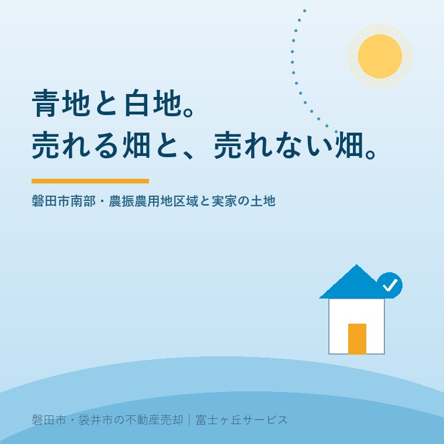

2026年8月14日｜カテゴリ：地域と不動産／コスト・税・制度

この記事の要点
Q. 親が残した磐田の田んぼを整理したいのですが、市役所で「ここは青地だから」と言われました。青地って何ですか。売れないということですか。
A. 売れないわけではありません。ただし「宅地にして売る」という道は、そのままでは通れません。青地とは、農業振興地域の中の農用地区域に入っている土地の通称です。農林水産省の説明では、農用地区域は「農用地等として利用すべき土地の区域」とされ、農地転用の制限や開発行為の制限がかかります。宅地などに変えたい場合は、先に農用地区域から外す手続き（農振除外）が必要で、磐田市の受付は年2回（6月と11月の各1か月間）、申出から農振除外の変更通知が届くまで約6ヵ月とされています。そのうえで、さらに農地転用の許可が要ります。一方、農家の方に農地のまま売る道であれば、青地のままでも進められる場合があります。つまり青地は「売れない土地」ではなく、「動き出しから完了までの時間が長い土地」です。磐田市・袋井市・森町では、介護施設の運営から不動産事業を始めた富士ヶ丘サービスのような「介護×不動産」専門の会社に相談するという選択肢があります。
磐田市の南側を車で走ると、景色がひらけます。
天竜川に沿った低い平野に、区画のそろった田んぼが続く。この整った風景こそが、実は不動産の話をややこしくしている当のものです。きれいに区画された農地は、多くの場合、公費をかけて基盤整備が行われた農地であり、行政としては「これからも農業に使ってほしい土地」だからです。
ご実家を相続して、田んぼや畑がついてきた。もう耕す人はいない。近所の方に頼んで作ってもらっているが、その方も高齢になってきた。そろそろ整理を、と市役所へ行ったら「青地ですね」と言われて話が止まった。──磐田で、いちばんよくある行き止まりのひとつです。
今日は、この「青地」と「白地」の違いと、そこから先の順番を整理します。制度は、2026年8月14日時点で農林水産省と磐田市が公表している内容に沿って書きます。
まず言葉の整理です。青地・白地は、法律上の用語ではありません。役所が使ってきた通称です。
市町村は、農業振興地域の中に農用地利用計画を定め、「農用地等として利用すべき土地の区域」＝農用地区域を指定します。この区域を計画図の上で色分けして示していたことから、区域内が「青地」、区域外が「白地」と呼ばれてきました。
農林水産省の説明では、農用地区域に含まれるのは、たとえば次のような土地です。
磐田市の南部に青地が多いのは、この条件によく当てはまるからです。まとまった平野で、ほ場整備が入り、用排水路が整っている。農業の側から見れば優良な農地であり、だからこそ守られています。
農林水産省は、農用地区域の土地について「その保全と有効利用を図るため、農地転用の制限、開発行為の制限等の措置がとられる」としています。そして、区域内での転用は「農用地利用計画において指定された用途に供する場合以外認められない」と示されています。
売却の現場に置き換えると、こうなります。
| やりたいこと | 青地（農用地区域内） | 白地（区域外の農地） |
|---|---|---|
| 農地のまま、農業をする人に売る | 進められる場合がある | 進められる場合がある |
| 宅地にして売る／家を建てて売る | そのままでは不可。先に農振除外が必要 | 農地転用の許可・届出の手続きへ進める |
| 資材置場・駐車場などにする | そのままでは不可。先に農振除外が必要 | 同上 |
ここが分かれ道です。「農地を農地として引き継いでもらう」のか、「農地を別の使い方に変えて手放す」のか。青地でつまずくのは、後者だけです。
そして実際のご相談では、前者で片づくことも珍しくありません。近隣で規模を広げている農家の方がいれば、農地のままお引き受けいただける可能性があります。田畑・山林の相続については田畑や山林を相続したときの記事にも書いていますので、あわせてお読みください。
宅地などに変えたい場合は、まず農用地区域から外してもらう手続きに入ります。これが通称「農振除外」です。
磐田市が公表している運用は、次のとおりです。
受付：年2回、6月と11月の各1か月間（土曜・日曜・祝日を除く）
申出書類の配布：受付月の前月（5月・10月）
期間：申出から農振除外の変更通知が郵送されるまで、約6ヵ月
この3行を、売却の予定表に置き換えてみてください。
6月に申し出て、除外の通知が届くのが年末ごろ。11月に申し出れば、翌年の春ごろ。しかも、書類は前月に配布されますから、実際の準備は受付月のさらに手前から始まります。そして磐田市は、要件を満たさないものは受付できないため、必ず事前に相談するよう求めています。
つまり「今年の秋に売りたい」と思ったときには、もう間に合わないことがある。これが青地のいちばんの特徴です。値段の問題でも、需要の問題でもありません。暦の問題です。
農振除外は、申し出れば通るものではありません。すべての要件を満たす必要があります。磐田市が挙げている要件を要約すると、次のとおりです。
| 要件 | 意味するところ |
|---|---|
| 代替性 | 青地以外の土地では代替が困難であること |
| 計画との整合 | 計画の達成に支障がないこと |
| 集団性 | 農用地の集団化や作業の効率化に支障がないこと |
| 利用集積 | 担い手への農地の利用集積に支障がないこと |
| 施設機能 | 用排水路や農道など、農業施設の機能に支障がないこと |
| 8年の壁 | 土地改良事業を行った区域内の土地は、工事完了から8年が経過していること |
この中で、磐田の南部でとくに効いてくるのが3つめ・4つめ・6つめです。
まとまった田んぼの真ん中を一区画だけ抜くという話は、集団性の要件でつまずきやすい。担い手の方がすでに借りて耕作している農地は、利用集積の要件が問題になります。そしてほ場整備が入った区域では、工事完了から8年という期間が問われます。
逆に、道路に接した区域の端、宅地に隣り合った小さな区画などは、相対的に話が進みやすい形です。同じ「青地」でも、位置によって見通しがまるで違うということです。
なお磐田市の案内では、農振除外には一般の除外である随時変更と、用途を変更する軽微変更の区別があるとされています。ご自分のケースがどちらにあたるかは、事前相談の場でご確認ください。
ここを誤解される方が本当に多いので、はっきり書きます。
農振除外は「青地を白地にする」手続きであって、「農地を宅地にする」手続きではありません。除外が済んだ土地は、白地の農地になっただけです。そこから先、あらためて農地転用の手続きが必要です。
磐田市の案内では、農地転用は次のように整理されています。
売却では、多くの場合5条にあたります。買主が家を建てるために農地を買う、というのがまさにこれです。
許可にかかる時間についても、磐田市は標準処理期間を示しています。県の機構の意見を聴かない事案は4週間、聴く事案は6週間です。
並べてみましょう。
事前相談 → 農振除外の申出（6月または11月）→ 約6ヵ月 → 除外の通知 → 農地転用の許可申請 → 4〜6週間 → 許可 → 引渡し
順調に進んでも、年単位で見ておく必要があります。脅かしたいのではありません。この長さを前提に、逆算して動けば済む話だからです。市街化調整区域そのものの考え方は市街化調整区域の実家の記事で詳しく書いています。
ここまで読むと、多くの方が「では農振除外の相談から」と考えます。実は、その前にやっておくことがあります。名義です。
手続きの申出も、農地転用の許可申請も、その土地の所有者が誰かを前提に進みます。ところが相続した田畑は、名義が親のまま、祖父母のまま、ということが少なくありません。お盆に親族が集まる時期は、この確認にちょうどよいタイミングです。
そして、名義の整理には時間がかかります。相続人が多ければなおさらです。農振除外の受付は年2回しかありません。その受付月に名義の話が終わっていなければ、次の受付は半年後です。
「順番を間違えると、半年単位で待たされる」──青地の土地では、これがそのまま起こります。
正直に書きます。青地の農地を、無理に宅地化して売ることが最善とは限りません。
手続きに1年以上かかり、その間の固定資産税も草刈りも続きます。そこまでして宅地化するより、農地のまま耕作してくださる方にお譲りしたほうが、結果として家族の負担が軽いということは、実際によくあります。
大事なのは、選択肢を並べてから決めることです。
どれを選ぶにしても、「名義」「位置」「区域」の3つは先に確認しておいて損がありません。この3つは、どの道を選んでも必ず聞かれるからです。
当社は、磐田市見付で介護施設を運営するところから不動産の仕事を始めました。ご相談の入口は、たいてい「親が施設に入った」「親を看取った」です。
そして、そういうご相談の中に、ほぼ必ず田んぼや畑が混ざっています。ご本人も「これは売れないと思う」とおっしゃる。けれど調べてみると、白地だったり、区域の端で見通しがあったり、あるいは近隣に引き受け手がいたりします。
私たちが目指しているのは「高く売る」だけではなく、「家族が困らない売却」です。介護の見通し、相続の順番、そして土地の制度上の条件。この3つを一度に見られることが、介護から始まった不動産会社の強みだと思っています。
価格の前に事実を整理する道具として、ふじがおか実家カルテを用意しています。
青地と言われて、話を止めてしまう方がいます。止める必要はありません。順番が違うだけです。
まずは、固定資産税の通知書をご用意ください。地番と地目が分かれば、そこから確認の順番を一枚にしてお渡しできます。
ふじがおか実家カルテ｜田畑がついてきた実家にも対応します
青地か白地か。まず、そこから。
住所と地番をもとに、農地の区域の見立て、手続きの順番と時期、名義と相続登記、境界、建物の状況を整理し、次に何を確認すべきかを1枚にしてお出しします。作成料0円・入力約1分。申込みだけで売却依頼にはなりません。
本記事は2026年8月14日時点で農林水産省・磐田市が公表している情報に基づく一般的な解説であり、個別の土地について農振除外や農地転用が認められることを保証するものではありません。農用地区域の指定状況、除外の要件の当てはめ、受付時期と必要書類、処理にかかる期間は年度や個別事情によって変わります。ご自身の土地の区域の別と手続きについては、必ず磐田市経済産業部農林水産課農地管理グループ（電話0538-37-4813）へ事前にご相談ください。農地の権利移動や転用の許可については磐田市農業委員会へ、相続登記や名義の整理は司法書士へ、境界の確定は土地家屋調査士へ、税金の取扱いは税理士へご確認ください。個別のご相談は当社までどうぞ。

この記事を書いた人：大石浩之（宅地建物取引士）
磐田市・袋井市・森町で「介護×相続×空き家」に特化した不動産売却支援を行う富士ヶ丘サービスの代表取締役・宅地建物取引士。介護施設の運営から不動産事業を始めた経験をもとに、売主とご家族が困らない売却を一件ずつお手伝いしています。プロフィール
磐田市・袋井市・森町の実家じまい・相続空き家相談
固定資産税通知書だけでも相談できます
住所があいまいでも、通知書や写真から名義・道路・農地・残置物の確認順を整理します。カルテ申込またはLINEで状況を送ってください。
富士ヶ丘サービス株式会社／静岡県磐田市見付5789番地1／TEL:0538-31-3308／静岡県知事 (2) 第14083号／代表取締役・宅地建物取引士 大石 浩之